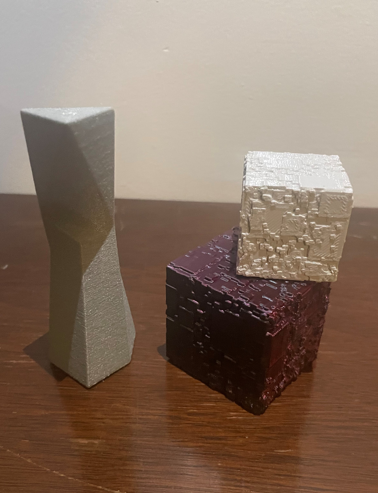
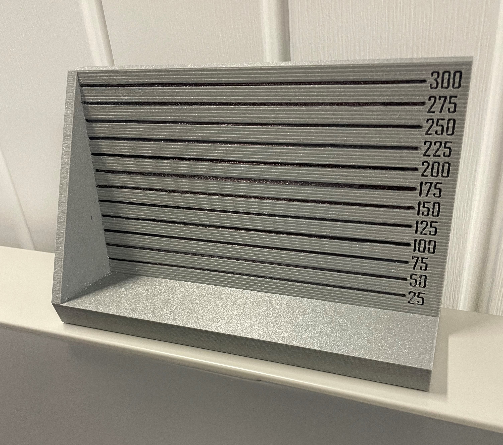
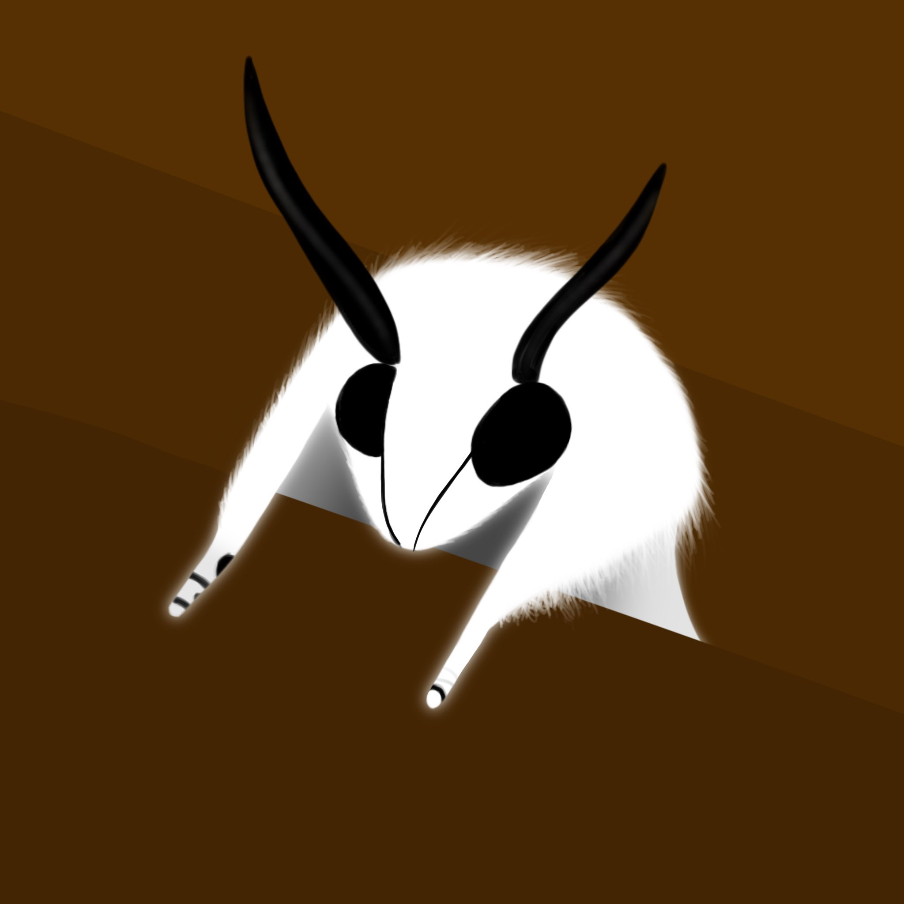
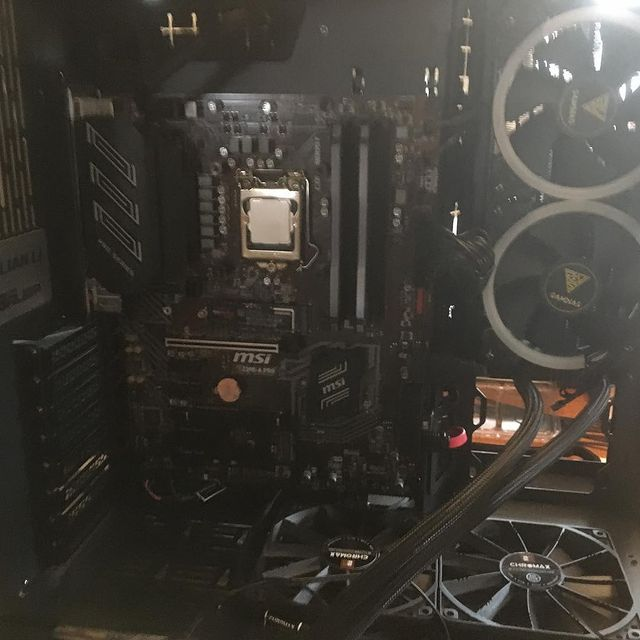
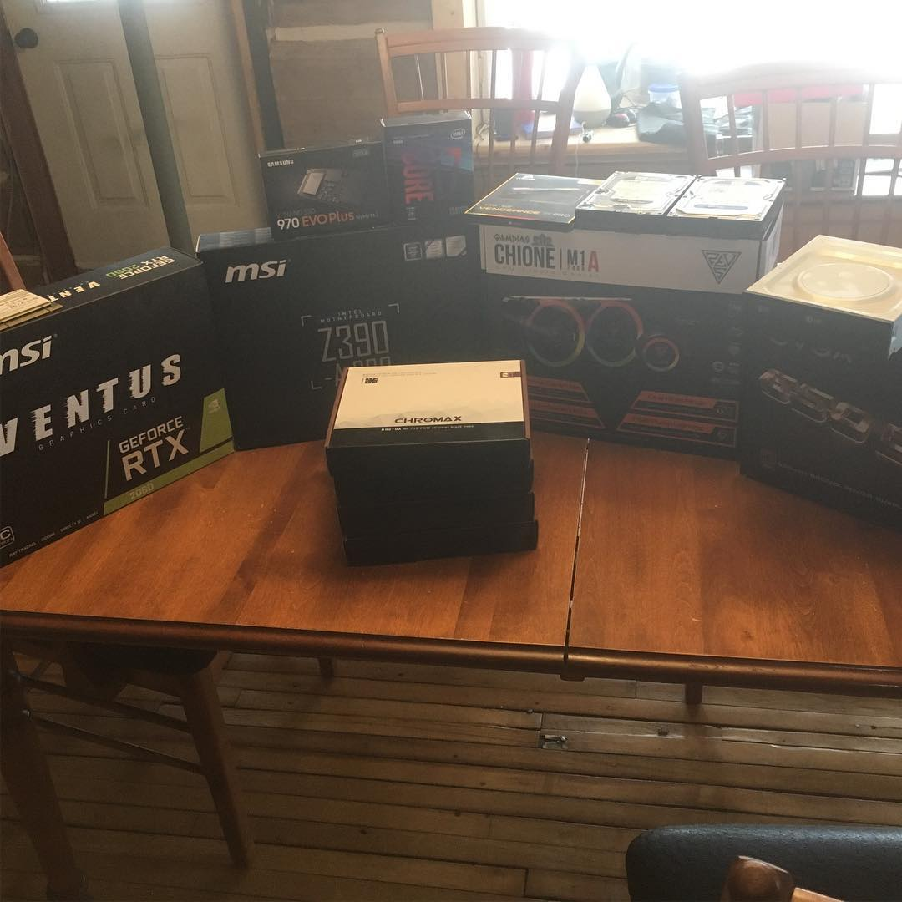

|

The model on the left is just a little something I modeled for fun. |

This is a Bookmark Counter I made for my work, i made it in blender and then 3D Printed it. I made this to help count multiple bookmarks without having to manually count them. |

This is a random drawing of a moth I made. |
|

Heres my computer that I assembled myself. |

And heres all the parts. |
And heres a cool pumpkin I carved once. |